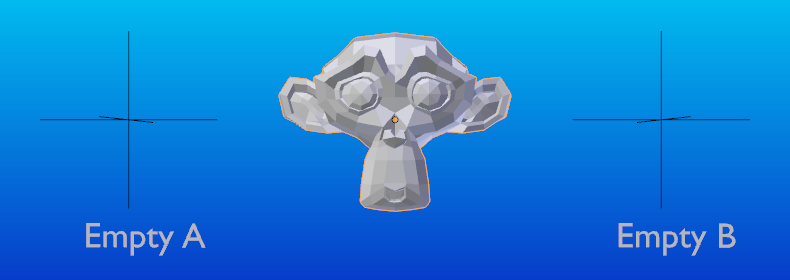
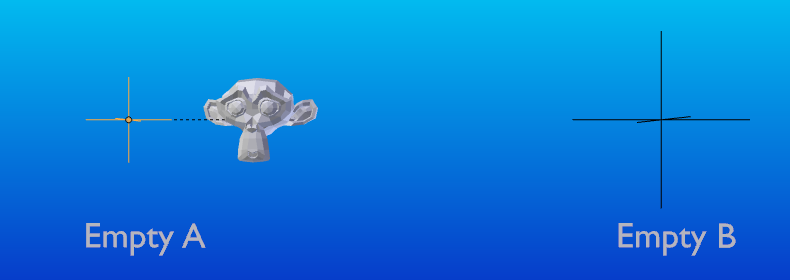
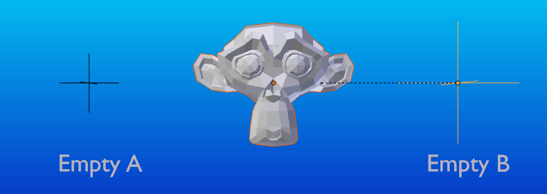
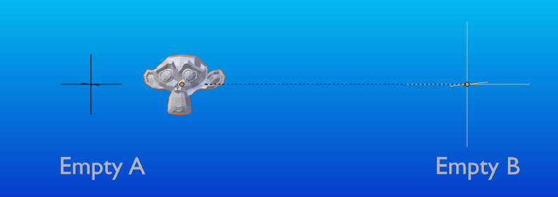
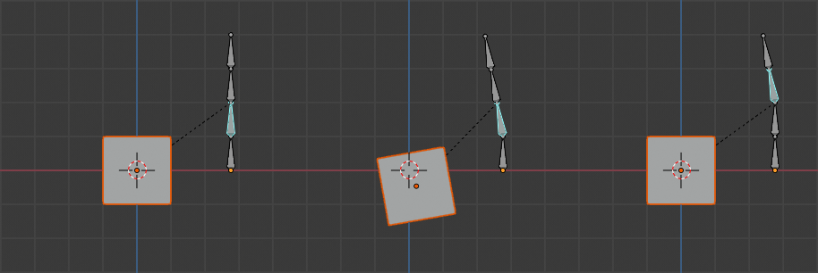
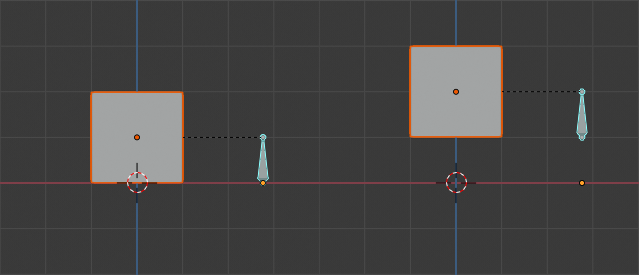
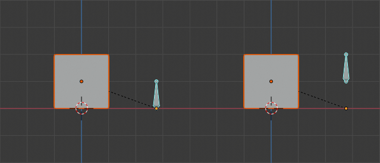
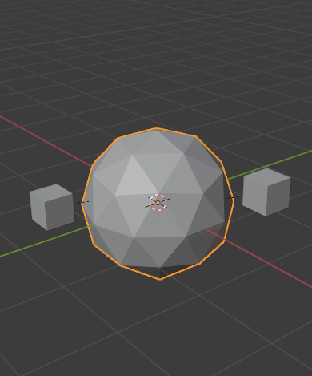
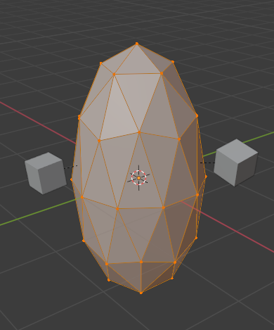
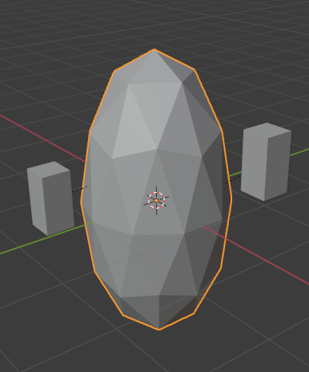

Parenting Object¶
Khi modeling một object phức tạp, chẳng hạn một chiếc đồng hồ, bạn có thể chọn dựng các bộ phận khác nhau thành các object riêng biệt. Để tất cả các bộ phận chuyển động như một khối ("chiếc đồng hồ"), bạn có thể chỉ định một object làm cha (parent) của tất cả các bộ phận còn lại. Các bộ phận kia trở thành con (children) của nó, và mọi phép dịch chuyển, xoay hay scale của cha cũng sẽ ảnh hưởng đến các con.
Khác với phần lớn các sinh vật trong tự nhiên, mỗi object hoặc bone trong Blender chỉ có nhiều nhất một cha. Nếu một object đã có object cha và bạn gán cho nó một cha khác thì Blender sẽ xóa quan hệ cha trước đó. Khi từ số nhiều "parents" được dùng trong chương này, nó chỉ đến hệ thống phân cấp các cha, tức là cha, ông, cụ, v.v. của một object.
Make Parent¶
Tham khảo
- Mode:
Object Mode
- Menu:
- Shortcut:
Ctrl-P
Để parenting các object, chọn ít nhất hai object (chọn các object con trước, chọn object cha sau cùng), rồi nhấn Ctrl-P. Menu Set Parent To sẽ hiện ra, cho phép bạn chọn một trong vài kiểu parenting khác nhau. Chọn một mục trong Set Parent To để xác nhận, và quan hệ con-cha sẽ được tạo. Các object đã chọn sẽ có 'cha' là object đang hoạt động, và vì thế chúng sẽ là 'anh em' với nhau.
Menu pop-up Set Parent To phụ thuộc ngữ cảnh, nghĩa là số mục nó hiển thị có thể thay đổi tùy vào những object nào đang được chọn khi phím tắt Ctrl-P được dùng.
Di chuyển, xoay hoặc scale cha thường cũng biến đổi theo (các) con. Ngược lại, biến đổi (các) con của cha sẽ không ảnh hưởng đến cha. Nói cách khác, chiều ảnh hưởng đi từ cha xuống con chứ không phải từ con lên cha.
Mẹo
Bạn có thể "đưa" một object con trở về vị trí cha bằng cách xóa origin của nó.
- Type
Blender hỗ trợ nhiều kiểu parenting khác nhau, được liệt kê dưới đây. Ngoài việc parenting các object được chọn, một số kiểu còn thêm Modifier hoặc Constraint vào các object con, với cha là object đích, hoặc kích hoạt một thuộc tính parent, ví dụ Follow Path.
- Keep Transform
Transform world hiện tại của object (tức vị trí, góc quay và scale tuyệt đối của nó trong world) được tính toán. Cha mới được đặt, sau đó ma trận Parent Inverse được tính sao cho sau khi đặt cha mới, object vẫn giữ nguyên transform world trước đó.
Gợi ý
Dùng Outliner
Còn một cách khác để xem quan hệ cha-con trong các nhóm, đó là dùng khung nhìn Outliner của Outliner editor.
Parent Inverse¶
Blender có thể gán một cha mà không di chuyển object con. Điều này được thực hiện nhờ một ma trận ẩn gọi là ma trận Parent Inverse, nằm giữa transform của cha và của con.
Khi các object được parenting bằng Ctrl-P, ma trận Parent Inverse được cập nhật. Tùy vào lựa chọn trong menu Set Parent, vị trí, góc quay và scale cục bộ của object cũng có thể được cập nhật. Để biết thêm chi tiết, xem Object Parent.
Ma trận Parent Inverse có thể được xóa bằng cách dùng Clear Parent Inverse.
Ghi chú
Khi đặt cha qua panel Object Properties, ma trận Parent Inverse luôn được đặt lại. Điều này có thể khiến object nhảy vị trí một cách bất ngờ. Để tránh điều này, hãy dùng Ctrl-P để đặt cha mới.
Object Parent¶
Object Parent là dạng parenting tổng quát nhất mà Blender hỗ trợ. Nó lấy các object đang được chọn và đặt object đang hoạt động làm object cha của tất cả object đó. Mỗi object con sẽ kế thừa các phép biến đổi của cha. Object cha có thể thuộc bất kỳ kiểu nào.
Nếu object đã có cha từ trước, quan hệ đó sẽ bị xóa trước. Điều này đưa object về vị trí, góc quay và scale riêng của nó, không còn ảnh hưởng từ cha.
Có ba toán tử cho phép bạn đặt cha cho một object. Chúng khác nhau ở cách tính ma trận Parent Inverse và Transform cục bộ của object.
Ví dụ: Object Parent (Keep Transform)¶
Object Parent với Keep Transform sẽ giữ lại mọi phép biến đổi trước đó mà object nhận được từ object cha cũ.
Giả sử chúng ta có một scene gồm ba object: hai object empty tên là "EmptyA" và "EmptyB", và một object Monkey. Hình Scene chưa có parenting. cho thấy ba object này chưa có bất kỳ quan hệ parenting nào.

Scene chưa có parenting.¶
Nếu bạn chọn object Monkey bằng cách nhấp LMB, rồi nhấp Shift-LMB vào object "EmptyA", nhấn Ctrl-P và cuối cùng chọn Object từ menu pop-up Set Parent To. Kết quả là object "EmptyA" trở thành object cha của object Monkey. Khi chỉ chọn "EmptyA", việc xoay/scale/di chuyển nó sẽ làm object Monkey thay đổi tương ứng.
Scale object "EmptyA" để Monkey trở nên nhỏ hơn và dịch sang trái một chút.

Monkey là object con của "EmptyA".¶
Nếu bạn chỉ chọn object Monkey bằng cách nhấp LMB, rồi nhấp Shift-LMB vào object "EmptyB", nhấn Ctrl-P và chọn Object từ menu pop-up Set Parent To. Kết quả là object "EmptyB" trở thành object cha của object Monkey. Để ý rằng khi đổi cha của Monkey, scale của Monkey cũng thay đổi.

Monkey là object con của "EmptyB".¶
Điều này xảy ra vì scale của object Monkey chưa bao giờ bị thay đổi trực tiếp; sự thay đổi đến từ việc nó là con của "EmptyA" vốn đã bị thay đổi scale. Đổi cha của Monkey sang "EmptyB" khiến các thay đổi scale gián tiếp đó biến mất, vì "EmptyB" chưa hề bị thay đổi scale.
Đây thường là hành vi mong muốn, nhưng đôi khi cũng cần rằng khi đổi object cha, object con giữ lại mọi phép biến đổi mà nó nhận được từ object cha cũ; Nếu thay vào đó, khi đổi cha của Monkey từ "EmptyA" sang "EmptyB", ta chọn kiểu parenting Object và bật Keep Transform, Monkey sẽ giữ lại thông tin scale mà nó nhận được từ cha cũ "EmptyA" khi được gán cho cha mới "EmptyB".

Object parent với Keep Transform.¶
Nếu bạn muốn thực hành theo phần mô tả trên, đây là blend-file:
Bone Parent¶
Bone parenting cho phép bạn biến một bone nhất định trong armature thành object cha của một object khác. Nghĩa là khi biến đổi armature, object con sẽ chỉ di chuyển nếu bone cụ thể mà nó là con của bone đó di chuyển.

Ba hình armature với bốn bone.¶
Trong hình Ba hình armature với bốn bone., bone thứ 2 là bone cha của object cube. Cube chỉ bị biến đổi nếu bone thứ 1 hoặc thứ 2 biến đổi. Để ý rằng thay đổi bone thứ 3 và thứ 4 không ảnh hưởng đến cube.
Để dùng bone parenting, trước tiên bạn phải chọn tất cả object con mà bạn muốn gán cho một bone armature cụ thể, rồi Shift-LMB chọn object armature và chuyển nó sang Pose Mode, sau đó chọn bone cụ thể muốn làm bone cha bằng LMB. Xong thì nhấn Ctrl-P và chọn bone từ menu pop-up Set Parent To.
Giờ thì biến đổi bone đó trong Pose Mode sẽ khiến các object con cũng biến đổi theo.
Relative Parenting¶
Bone relative parenting là một tùy chọn bạn có thể bật/tắt cho từng bone. Nó hoạt động giống bone parenting với một điểm khác biệt.
Với bone parenting, nếu bạn đã gán một bone cho một số object con rồi chọn bone đó, chuyển sang Edit Mode và di chuyển bone; Khi bạn chuyển lại Pose Mode của bone đó, object con được gắn với bone đó sẽ bám về vị trí của bone trong Pose Mode.

Một bone armature đơn có object cube được gắn làm con bằng bone parenting.¶
Trong hình Một bone armature đơn có object cube được gắn làm con bằng bone parenting., hình thứ 1 cho thấy vị trí của cube và armature trước khi bone được di chuyển trong Edit Mode. Hình thứ 2 cho thấy vị trí của cube và armature sau khi bone được chọn trong Edit Mode, di chuyển và chuyển lại Pose Mode. Để ý rằng object con di chuyển đến vị trí mới của pose bone.
Bone relative parenting hoạt động khác đi; Nếu bạn di chuyển một bone cha trong Edit Mode, khi chuyển lại Pose Mode, các object con sẽ không di chuyển đến vị trí mới của Pose Bone.

Một bone với bone relative parent tới một cube.¶
Trong hình Một bone với bone relative parent tới một cube., hình thứ 1 cho thấy vị trí của cube và armature trước khi bone được di chuyển trong Edit Mode. Hình thứ 2 cho thấy vị trí của cube và armature sau khi bone được chọn trong Edit Mode, di chuyển và chuyển lại Pose Mode. Để ý rằng object con không di chuyển đến vị trí mới của pose bone.
Ghi chú
Khi dùng Ctrl-P để đặt cha, chọn "Bone" hoặc "Bone Relative" sẽ tương ứng tắt và bật tùy chọn "Relative Parenting" của bone. Vì "Relative Parenting" là tùy chọn được đặt cho từng bone, điều này ảnh hưởng cùng lúc đến tất cả object con của bone đó.
Vertex Parent¶
Với các object thuộc kiểu curve, surface, mesh và lattice, có thể dùng một trong các vertex hoặc điểm của nó làm cha cho object khác. Bạn cũng có thể gán một object vào một vertex đơn hoặc một nhóm ba vertex; như vậy (các) con sẽ di chuyển khi mesh cha bị biến dạng.
Vertex Parent từ Edit Mode¶
Trong Object Mode, chọn (các) con trước rồi chọn object cha. Nhấn Tab vào Edit Mode và trên object cha, chọn hoặc một vertex xác định một điểm đơn, hoặc ba vertex xác định một vùng (ba vertex này không nhất thiết phải tạo thành một face hoàn chỉnh; chúng có thể là bất kỳ ba vertex nào của object cha), rồi nhấn Ctrl-P để đặt vertex parent.
Lúc này, nếu một vertex đơn được chọn, một đường quan hệ/parenting sẽ được vẽ từ vertex đó tới (các) con. Nếu ba vertex được chọn, đường quan hệ/parenting được vẽ từ tâm trung bình của ba điểm (của object cha) tới (các) con. Giờ đây, khi mesh cha biến dạng và (các) vertex cha được chọn di chuyển, (các) con cũng sẽ di chuyển theo.
Vertex Parent từ Object Mode¶
Vertex parenting có thể được thực hiện từ Object Mode, làm giống như object parenting thông thường: nhấn Ctrl-P trong Object Mode và chọn Vertex hoặc Vertex (Triangle).
Các vertex gần nhất của mỗi object sẽ được dùng, thường đây chính là điều bạn muốn.
 Từng cube nhỏ có thể được tự động gán vào bộ ba vertex lân cận trên icosphere bằng cách dùng "Vertex (Triangle)" trong menu ngữ cảnh đặt cha.¶ |
 Việc định hình lại object trong Edit Mode khi đó khiến từng cube theo đúng vertex parent của riêng nó.¶ |
 Việc scale icosphere cha trong Object Mode khiến các cube con cũng được scale như mong đợi.¶ |


Mục menu ngữ cảnh đặt cha này giúp người dùng thiết lập nhanh một số lượng lớn quan hệ vertex parent, tránh khỏi công việc nhàm chán là thiết lập từng quan hệ cha-con theo vertex riêng lẻ.
Ghi chú
Thực chất nó là một dạng hook "đảo ngược".
Make Parent without Inverse¶
Tham khảo
- Mode:
Object Mode
- Menu:
Cách này đặt cha, rồi đặt lại ma trận Parent Inverse và vị trí cục bộ của object. Kết quả là object sẽ di chuyển đến vị trí của cha, nhưng giữ nguyên góc quay và scale.
- Keep Transform
Transform world hiện tại của object (tức vị trí, góc quay và scale tuyệt đối của nó trong world) được tính toán. Cha mới được đặt, sau đó các giá trị transform cục bộ được đặt sao cho sau khi đặt cha mới, object vẫn giữ transform world trước đó.
Clear Parent¶
Tham khảo
- Mode:
Object Mode
- Menu:
- Shortcut:
Alt-P
Bạn có thể xóa một quan hệ cha-con bằng Alt-P.
- Clear Parent
Nếu cha trong nhóm được chọn, sẽ không có gì xảy ra. Nếu một hoặc nhiều con được chọn, chúng được tách khỏi cha, hay được giải phóng, và trở về vị trí, góc quay và kích thước gốc của mình.
- Clear and Keep Transformation
Giải phóng các con khỏi cha, và giữ lại vị trí, góc quay và kích thước mà cha đã tạo cho chúng.
Xem Non-Uniform Scale vốn có thể áp dụng ở đây.
- Clear Parent Inverse
Thay vì xóa quan hệ phân cấp cha-con, cách này xóa ma trận Parent Inverse khỏi các object được chọn. Khi ma trận rỗng, các thuộc tính vị trí, góc quay và scale của con được diễn giải trong không gian tọa độ của cha.
Hạn chế đã biết¶
Scale không đồng đều¶
Một cha có scale không đồng đều kèm góc quay so với con của nó có thể gây ra hiệu ứng shear (nghiêng lệch).
Mặc dù parenting hỗ trợ điều này, độ nghiêng lệch sẽ bị mất khi xóa cha, vì nó không thể được biểu diễn bằng vị trí, scale và góc quay.
Nếu Clear and Keep Transformation làm object di chuyển, thì scale không đồng đều nhiều khả năng là nguyên nhân.